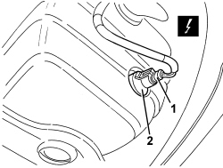
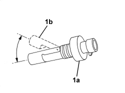

5050A16 WASHER FLUID LEVEL SENSOR - R R
- Path
- Procedures > 50 AUXILIARY UNITS > 5050 SCREEN WASHERS AND HEADLAMP WASH/WIPE > 5050A WINDSCREEN AND HEADLAMP WASHER RESERVOIR > 5050A16 WASHER FLUID LEVEL SENSOR - R R
- Kind
- repair procedure (removal / refitting; the operation number is the code)
- Applies to
- all engines; all production periods
- Interactive page
- https://sloeber94.github.io/elrnDB-aBrrSpdr/en/#/946002298
Applies to: all engines; all production periods
 Removing
Removing
 Refitting
RefittingOp. 7055B54 UNDER ENGINE PROTECTION/GUARD - R.R.
1. Disconnect the electrical connection.
Description | Component |
|---|---|
WINDSCREEN WASHER RESERVOIR SENSOR |
2. Remove the washer fluid level sensor (press-fitted).

Applies to: all engines; all production periods
Refitting
Removing- Check that the washer fluid level sensor is not damaged and, if necessary, conduct an electrical test.
1. If removed, refit the washer fluid level sensor (1a), fitting it in place positioning the float (1b) towards the top.

Applies to: all engines; all production periods
- Connect the electrical connection.